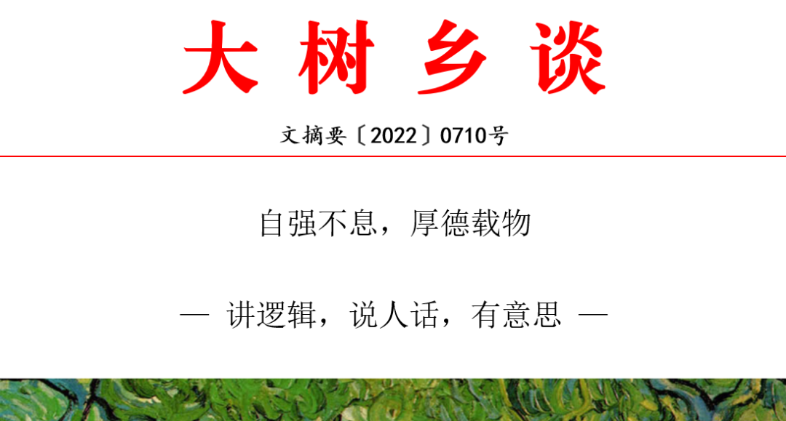
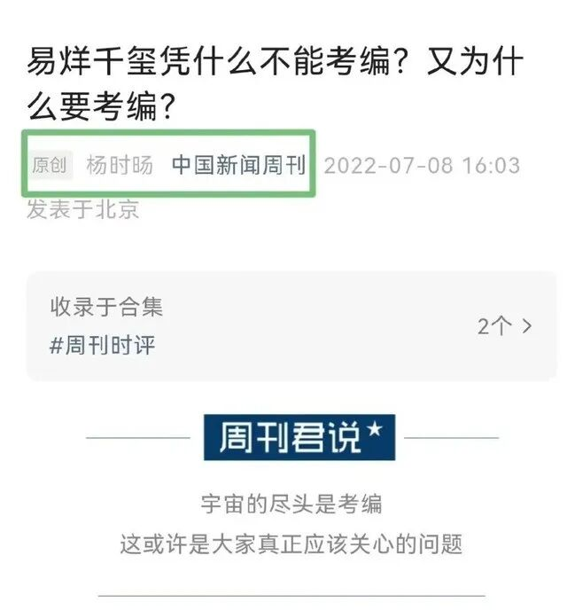
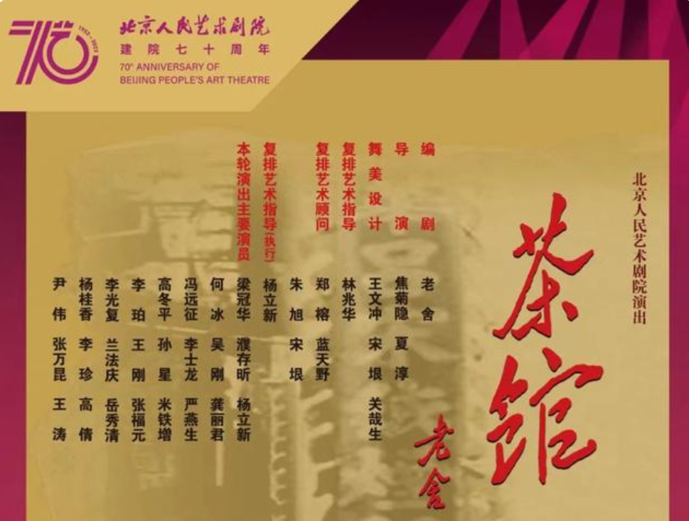

“小镇做题家”理应自豪

- 1 -
这两天，“小镇做题家”这个词再次流传起来，事情起因很简单，有几位明星考上了国家话剧院（正在公示中，尚未正式录取），于是引起了关于考试程序、公平等方面的热议，本来这没什么，只需要等国家话剧院回应就行了。但偏偏有些人不知道怎么想的，跳出来说一些非常侮辱人的话，更可恨的是“公器私用”，比如某中国开头的周刊，就发表了一篇署名“杨某某”的文章《****凭什么不能考编？又为什么要考编》，需要说明的是这位“杨某某”就是该报某部主任。

小镇一直认为，针对一个热点事件各抒己见是正常的，也应该鼓励，但是不同身份的人说话要求不同。作为普通大众，影响力有限，也不可能对一些专业的事情特别了解，基于自己朴素的认知说一些话无可厚非。这就像前不久安倍晋三被枪击身亡，很多普通中国人秉持朴素的爱国情怀和民族好恶，把安倍晋三视为某种代表，说一些激烈的话，这没什么，不值得上纲上线，更没必要反思；但国家层面无论领导人还是外交部一定会恰当地表达态度，这就是层次不同、责任不同。
而在“明星考编”这件事上，专业的媒体人决不能像一个普通人一样，尤其是堂堂的大报文化部主任亲笔所写，应该有基本的客观、公正，更要在这基础上增加一些深度和情怀。但很可惜，杨主任的这篇文章政治立场含糊、思想极为偏颇、逻辑思维错乱，更重要的是对人民没有感情。就在今年4月，总书记就特别深情地对中青年干部嘱咐：“贯彻党的群众路线，首先要对群众有感情，真正把自己当作群众的一员、把群众的事当作自己的事。” 媒体工作者当然不是领导干部，但手中的笔是另一种公权力，作为官媒也更应该“首先要对群众有感情”，否则何以秉持公心？如果一个媒体没有了公心，那距离靠舆论影响力谋取私利还远吗？早在2021年，以中宣部等10部门就联合开展“持续深入开展打击新闻敲诈和假新闻专项行动”，就是要加强传媒监管、营造良好新闻舆论环境、维护人民群众根本利益，就是要打掉“公器私用”的坏毛病。
- 2 -
对于“明星考编”这件事，前几天就有读者希望小镇谈谈，小镇其实不想谈的，因为这个话题有些混淆视听，国家话剧院的“编”和很多人愤怒的“编”不是一回事。小镇非常理解就业困难，很多人努力很久就是希望获得一个可以安心的保障，于是掌握更多资源的明星获得了一个编制，还有一些说不清楚的地方，于是产生了共情。但还是要说，这是两码事。“编制”有很多种，普通人关注的公务员、教师等是一种，国家话剧院的是一种，企业也有编制的说法，比如互联网公司常说的“headcount”，也就是HC。先说最后一种，任何公司都需要平衡人效，需要建立完善的组织管理体系，不可能随意增加、减少人员，越大的公司越要有体系，于是就有了HC。
今年上半年很多公司都在集体裁员，为什么裁员这有很多种原因，今天暂不展开，目前有不少人正在招聘面试流程中，但很多需要等一等，等的就是HC，裁员首先就是压缩各部门的HC也就是编制。更容易理解的就是日本企业的终身雇佣制，也就是“正式员工”，这些人可以说拿到了企业的编制，收入高、地位高还极少被裁；目前日本公司已经很少雇佣“正式员工”了，改以“非正式员工”或者说“契约员工”为主，其实就是签订劳动合同的员工。所以，都叫编制但截然不同。
在中国演艺界，有三大位居鄙视链顶端的存在，分别是国家话剧院、北京人艺和上海人艺。一个明星首先是演员，无论他（她）流量再大、赚钱再多，在演员圈子里也未必上档次。在2012年八项规定之前，吃个饭叫一些二三线明星过来凑个热闹、表演个节目啥的很常见，也不需要多么高的地位就能做到。但是一旦有了国家话剧院、北京人艺和上海人艺的身份，那就不一样了，这不是钱的事。同样的也比如中国文联下属各国字头协会，比如中国戏剧家协会、中国电影家协会、中国音乐家协会、中国曲艺家协会等等，能有这些国字头身份，一定程度上代表国家的认可。
所以很多明星当然希望进入，但这跟公务员、老师的编制是两码事。国家话剧院是文化和旅游部唯一直属的国家艺术院团，地位自然极高，国家也确实每年有一些拨款，但是国家给的钱是让国家话剧院制作高水平、符合国家文化导向的精品节目，不是用来发工资的，每一笔拨款都是专款专用、事后审计。比如2010年曾编排有“中国反腐第一剧”之称的《这是最后的斗争》。2010年，国家话剧院就已经进行了 以 “全员聘任制改革”等为核心的企业化改革 ，自负盈亏，所有国家话剧院工作人员的工资都要靠话剧院自己去赚，国家不管。2010年的时候，国家话剧院就拥有260名演员，其中就包括唐国强、章子怡、张丰毅、孙红雷等70余名一线演员，全都是明星。
当时国家话剧院改革明确要求“凡和国家话剧院签约的演员必须首先服从话剧院的工作安排，如接戏必须向话剧院交纳一定费用。”注意：服从国家话剧院的工作安排、接戏要交纳费用，其实不仅仅这两点，与国家话剧院签约的任何人包括明星，在接戏之前必须经话剧院同意，如果有损话剧院形象，就不能接，这些是明确写在合同里面的。如果从赚钱上看，一个明星进入国家话剧院，赚的钱只会更少： 一是国家话剧院有工作任务。签约的演员必须首先完成话剧院的工作安排，老老实实的去排戏，一年起码一两个月，这就已经减少了演出赚钱的时间。

北京人艺重排《茶馆》，老中青三代演员荟集
二是对形象有更高的要求。国家话剧院是中国最高的艺术院团，代表国家的认可，一旦进入就必须对国家形象负责，就必须规范自己的言行，“德艺双馨”是基本的要求。既然对形象有很高的要求，那对外演出、综艺也必须挑选，这又一次减少了收入。要求的不仅仅是言行道德，更是演员基本能力，比如现在特别让人诟病的演员拍戏竟然不背台词，上去就念“1234567”，这在国家话剧院绝不允许，明确要求对40岁以下青年演员进行台词考核，谁不合格就踢出去，无一例外。
三是对外演出要向话剧团交钱。2010年国家话剧院已经进行了企业化改革，要自负盈亏，相当一部分工资就是靠签约的明星缴纳的钱，可以这么说进入国家话剧院以后，一个明星交上去的钱很可能是自己工资的几十倍、几百倍。北京人艺、上海人艺也都是类似的，正是因为有这么多限制，而北京人艺又是一贯的演出安排极多，非常影响明星的职业发展，所以国家话剧院才成为明星首选，但是想进入门槛很高，一般人够不着边的。小镇非常理解很多朋友的愤怒，但国家话剧院的编制是企业自己的编制，与公务员的行政编、教师的事业编是两码事。国家话剧院的演员本来就允许在外演出赚钱，只要符合规定、向话剧院缴纳一定费用就行了。至于不考笔试，演员本就是靠“演”，国家也明确规定这一类招聘可以不考笔试，笔试又如何能挑选合格的演员？
难不成以后奥运会也别跑啊跳了，干脆就做题，谁体育理论知识丰富、考的分数高谁就是奥运冠军，这合理吗？国家话剧院录取过程中有什么问题，这有待国家话剧院回应，小镇不认为国家话剧院有必要搞什么暗箱的事，以这几个人的过去表现，本就有实力进入国家话剧院，国家话剧院也希望能够有坚持走正道、有影响力的年轻明星加入国家的艺术队伍，这是双赢。还是要再次强调，不要把普通人习惯的考试、考编的思维套用在一切领域，考试并不是唯一。
- 3 -
说到这，可能有人会疑惑，既然加入国家话剧院，要求这么多，赚钱还少了，那图啥啊？正如前面所说，明星首先是演员，而演员是有鄙视链的，能够进入国家话剧院，这相当于是国家对一名演员实力和品行的认可，一个明星再有流量、再赚钱，但是不符合标准也不可能进入国家话剧院。被国家认可，这难道还不够吗？很多时候，约束和权利是共存的。当然，除了精神上的被认可的喜悦，还有很多实实在在的收益，简单说两点：第一点：这是一个强大的圈子，是走向更强的起点。三大剧团，背后是三大圈子，影视圈本就是人情世故的人脉圈，不够档次、没进入圈子，一些事就轮不到。
说的极端点，明星和艺术家这是两码事，比如在香港，明星做梦都想进入豪门，但是豪门并不在乎所谓的明星，明星嫁入豪门必须放弃事业、还必须伏低做小，但是被国家认可就不同了。最典型的，奥运冠军郭晶晶与霍启刚成婚，霍家是豪门中的豪门，但是霍震霆说了一句话“感谢郭晶晶下嫁霍家”，婚礼当天，为显示对郭晶晶的重视，霍家邀请了近千位世界各地的政商名流，科威特萨巴赫亲王亲至，何鸿燊、李嘉诚、李兆基等大佬都只能屈居坐在宾客西。这是什么差别？
当然，进入国家话剧院不过是开始，想要被国家认可，从明星变成艺术家还需要付出长时间的艰苦努力，但没有开始如何有结果？第二点：正能量含量高、风险低，让人放心。影视娱乐界这两年很不好过，明星翻船太多，拍长剧集本来就投入很大、风险更高，好不容易拍完了要上映了，结果一个明星出事，片子就必须大改。如果是配角还好，主角的话那是改无可改，只能被迫放弃，几千万上亿的投资打了水漂。不仅仅是拍戏，综艺、代言、商广等等也是一样，虽然签订了合同，如果因为明星自己的问题导致损失，明星要赔偿，但有些影响不是钱能计算的，何况明星也未必赔的起。
现在投资界特别讲究正能量含量，以是否符合国家政策导向作为控制风险的第一关，CSR和ESG特别热门，本周生态环境部刚刚指导召开了“2022ESG全球领导者峰会”。影视娱乐界也一样，现在特别重视明星的格调，强调“正能量”，最好是被国家认可的，这样可以降低很多风险。小镇有一位做节目的朋友，他计划邀请某特别有流量的嘉宾，问小镇意见，小镇当时就说，这个人流量确实高，但未必稳，在目前的政策环境下，建议一定要以是否稳作为第一考虑，然后才是流量等商业化的维度，何况流量在他这个节目里并不重要。
最终这位朋友选择了流量不大但获得国家认可身份的嘉宾，而这位流量很大的嘉宾后来主动说贴钱上节目都没用，没过一个月，这位就暴雷了，大家肯定看到过这位的新闻。所以进入国家话剧院，这就是一种国家认可的身份，由国家对明星的行为进行一定的管控，明星更容易获得一些特别重视风险和正能量的机会。
- 4 -
最后，回到题目。前面基本说清楚了明星考国家话剧院到底是什么回事，这跟公务员、教师考试截然不同，普通人不了解这些很正常，知道的人应该耐心的科普，不能因为普通人不理解就可以进行嘲笑，更不能以“小镇做题家”进行污蔑。中国某某周刊的杨主任，他自己难道就不是“小镇做题家”了吗？对于普通人来说，“小镇做题家”是艰苦努力后才能获得的果实啊。“小镇做题家”这个词诞生在豆瓣“985废物引进计划”小组，特指 “出身小城，埋头苦读，擅长应试，缺乏一定视野和资源的青年学子” ，最初起源于一篇题为“写给小镇做题家们的一封信”的自述，在这篇自述里，作者写道:“个人奋斗固然重要，但家境、出身、父母资源、社会时局和运气也在一个人的人生轨迹中扮演着重要的角色”；
“能考出来，一定会有乘风破浪的机会”；
“以后人生得意之时，也不要忘记自己的出身，不要去嘲笑那些深陷窘境的人是因为他们不努力”；“小镇做题家”就是普通人努力奋斗的榜样啊，又何必因为被称为“小镇做题家”而觉得被侮辱？小镇就特别喜欢“小镇做题家”的称呼，小镇就是典型的“小镇做题家”，没有显赫的出身、家庭资源，就是靠自己的努力，靠手里的笔一步步走到今天，现在也正以自己的笔勉励更多人，小镇这个自称也是为了记住自己的来处。
小镇第一次吃肯德基，还是在大二，发了奖学金以后，几位关系好的同学非要小镇请客，点名吃“全家桶”，这才第一次吃到；小镇也是父母双方直系第一位公务员，第一次知道公务员考试这件事还是在大三的课堂上，当时小镇还挺激动的给父亲发信息，说以后想当公务员，后来父亲回信说，不用过于强求，不当公务员也很好。父亲这么说是为了减压，因为在十几年前看来，公务员那不就是靠关系才能当上吗，真能考个试就成了公务员？但最后，小镇还是通过考试成为了一名公务员，但是与其他同事相比，对于公务员到底该怎么表现、如何争取机会很不了解；但后来还是多次获得别人羡慕的调动，甚至被同事认为有关系，还通过国考到了不错的单位，然后在机缘巧合下被认可，到了更加核心的部门。
小镇一直记得两件事：
第一件事：选择小镇的面试主考官后来对小镇说，有两位考生托关系找过他，但他都没选，觉得小镇更适合这个岗位，能够把工作做好，所以选择了小镇。（小镇后来了解，这两位考生托的关系最低也是正厅级）第二件事：小镇进入相对更核心的部门后，有一次加班，处长对小镇说，你并不是最优的选择，事实上有好几次领导都犹豫了，觉得你不适合，但最终观察了半年，多位领导综合评价，最终决定给一个机会，让你留下。所以小镇一直相信，普通人通过自己的努力一样可以改变自己的人生，虽然没有背景、没人指导，一定会吃更多的苦、走更多的弯路，但是只要自己不放弃，只要始终坚持自己的梦，就一定不会更差。十几年前，小镇刚刚工作的时候，被年长几岁的同事笑称“来了一位小姑娘”，当时其实很内向，大学时候自我介绍都磕磕绊绊的，但现在呢？
不要觉得相比有基础的人显得这也不懂那也不会就自卑，更不要因为同辈的压力就自我放弃。今天小镇还想推荐一本书《钢铁是怎样炼成的》，这本书小镇第一次读应该是小学三年级，当时懵懵懂懂，还得翻着字典看，并没有看懂。但随着成长，当初看不懂的慢慢就懂了，更成为长久的力量。
无论是《钢铁是怎么炼成的》的主角柯察金，还是“小镇做题家”们，不正是无产者的奋斗？
其他文章推荐
■ 中央部委公务员的待遇与发展
如果喜欢，还请点赞、“在看”和关注吧 欢迎分享，让更多人发现“大树乡谈”